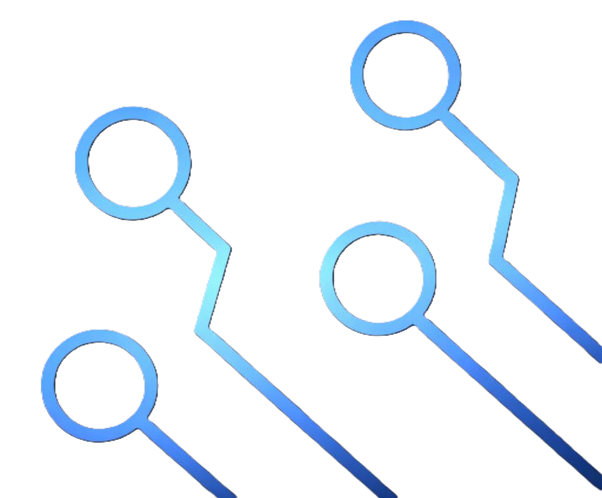

Nossos Serviços
- Instalação de programas
- Formatação de computadores e notebooks
- Manutenção preventiva e corretiva
- Upgrade de SSD
- Acesso remoto para suporte técnico
- Conserto de computadores, notebooks, celulares e tablets
- dentre outros serviços eletrônicos
Entre em contato com seu problema referente ao seu computador, notebook, celular ou tablet faremos o diagnóstico e lhe entregaremos a solução referente ao problema. Todos os serviços são realizados com profissionalismo, garantia, qualidade, preço justo e atenção aos detalhes.
